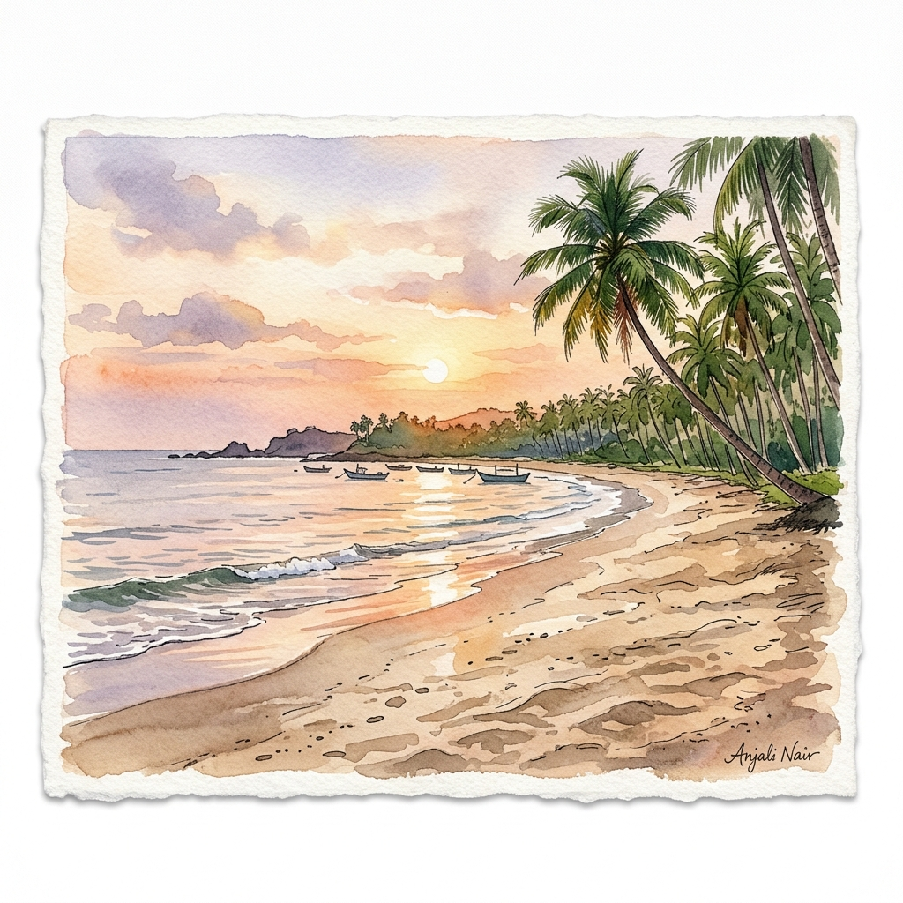
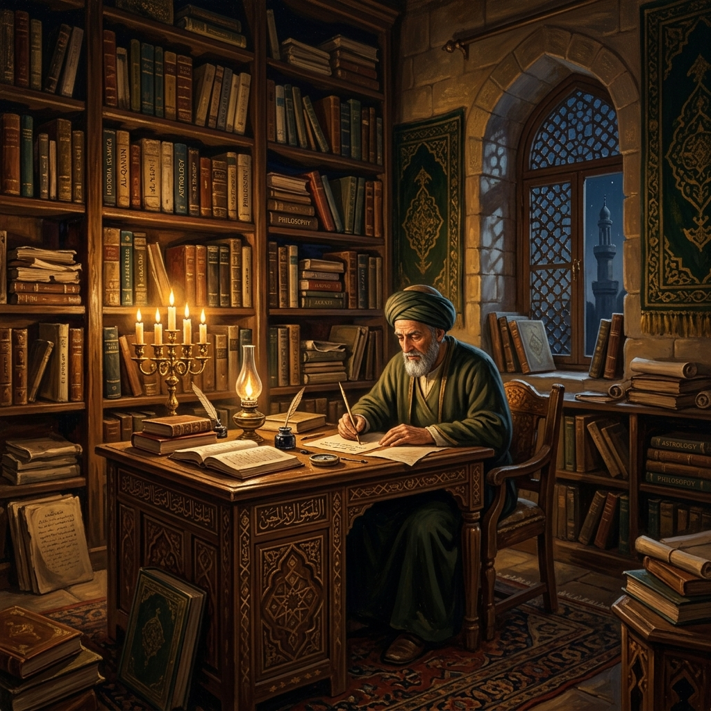

Chembirika, Kasaragod district, Kerala.
Work across prayer timings, qibla direction, literature, and education.
Founder of Malabar Islamic Complex, Chattanchal.
Served many mahals across Kerala and Karnataka.
Biography & Life
A life shaped by learning, leadership, and public duty.
CM Abdulla Moulavi, widely remembered as CM Usthad and Chembirika Qazi, was a Kerala Muslim scholar known for his command of Islamic jurisprudence, astronomy, mathematics, languages, and community leadership.
His public life connected traditional scholarship with careful scientific inquiry. He wrote and taught on prayer time calculation, qibla direction, moon sighting, literature, and religious education, while also helping build institutions that carried his educational vision forward.
His vision was to synthesize the eternal values of faith with the progressive tools of science, mathematics, and institutional excellence.Archive Editorial Committee
Family
Lineage & Heritage
Born into a respected family of scholars in Chembirika, Kasaragod. His ancestral house remains a center of spiritual guidance and community trust.
Education
Scholarly Formation
Graduated as Maulvi Fadhil Baqawi from Baqiyat al-Swalihat in Vellore, mastering Islamic law, astronomy, mathematics, and Arabic classical sciences.
Career
Public & Judicial Service
Served as Chief Qazi across dozens of mahals in Kerala and South Karnataka, while leading educational reform as founder of the Malabar Islamic Complex (MIC).
Interactive Timeline
A chronological journey through a life of service and leadership.
Born in Chembirika
CM Abdulla Moulavi was born in the coastal village of Chembirika in Kasaragod district, Kerala, to a renowned family of scholars and spiritual leaders.

Early LifeScholarly Graduation (Baqawi)
Graduated as a Maulvi Fadhil Baqawi from the prestigious Baqiyat al-Swalihat in Vellore, mastering Islamic jurisprudence, languages, and astronomy.

EducationJamia Sa'diyya Arabia Established
Jamia Sa'diyya Arabia started as a premier educational institution, marking a major milestone in advancing Islamic learning and social welfare in Kasaragod.
 Institution
Institution
Fields of work & Research
The archive is organized around the subjects he returned to repeatedly.
His intellectual legacy spans classical Islamic theology, complex mathematics, observational astronomy, and multilingual translations, bridging traditional sciences with empirical observation.
Islamic Jurisprudence & Fatwas
Fatwa rulings, qazi judicial service, community settlement, and legal guidance.
Astronomy
Prayer timings, moon sighting, qibla direction, and field observations.
Mathematics & Science
Logarithm, trigonometry, compass declination, and applied calculation.
Languages & Lectures
Arabic, Malayalam, Urdu, English, translation notes, and public speeches.
Books & Literature
Works catalogued, preserved, and searchable.
English
Magnetic Compass and Its Declination
A practical, ground-breaking treatise on magnetic variation, compass declination, and exact qibla direction calculation.
Add scan or PDF
Arabic
Risala fi Istikhraju Auqati Ssalati
Mathematical and astronomical formulation for determining prayer times and directional azimuths across regions.
Verify edition
Arabic
Ilmul Falak Ala Dhau'i Ilmil Hadees
An introductory work bridging Hadith traditions with astronomical science, moon sighting, and celestial observations.
Add bibliography
Fiqh & Law
Fiqh Rulings & Judicial Notes
A compilation of legal opinions, qazi judgments, and scholarly Fatwas settling community matters across Kerala and Karnataka.
Submit document
Translation
Arabic & Urdu Translation Notes
Preserved translations, poetic renditions, and multilingual commentaries on classical manuscripts.
Add manuscript
Mathematics
Tazweedul Fikri Wal Himam
Applied mathematical work introducing logarithmic calculations, trigonometric ratios, and computational tables for students.
Confirm titleCase Diary & Digital Archive
A sober, verified public record of documents, dates, and official inquiries.
Archive Standards
Documentary Integrity & Standards
This section serves as a verified digital archive for Chembirika Qazi's case. Every entry is indexed with official dates, police files, court records, and verified press sources.
15+
Official Filings
CBI & DIG
Inquiry Scopes
15 Feb 2010
FIR & Police Record
Passing of CM Usthad & Initial Crime Report
Initial police reports recorded his tragic death at Chembirika beach. Local community leadership filed formal petitions demanding a transparent, thorough forensic investigation.
2010 – Present
Court & CBI Investigation
CBI Probe & High Court Filings
Following public mobilization, the case was transferred to the Central Bureau of Investigation (CBI). Action committees and family legal teams submitted multiple petitions to the High Court of Kerala.
29 Aug 2025
Fresh Inquiry Status
Fresh Inquiry Directed under Kannur Range DIG
KasargodVartha reported that state authorities assigned a renewed inquiry supervised by the Kannur Range DIG to review unexamined evidence and case points.
FIR & Station Reports
Indexed station complaints, inquest reports, and initial police statements.
Court Orders & Petitions
High Court submissions, CBI status reports, and legal action council affidavits.
Newspaper Archives
Chronological press clippings, investigative journalism reports, and coverage.
Downloadable PDF Hub
Full-text PDF document archive for legal researchers, journalists, and public record.
Articles
Editorial paths for long-form writing and research.
Visual & Media Vault
Preserving the life, campuses, speeches, and historic legacy of CM Usthad.
 Rare Audio & Video
Rare Audio & Video
45 MINS • ARCHIVAL SPEECHES
Recorded Speeches & Astronomy Lectures
Historical audio and video recordings of CM Usthad's public addresses, qibla science seminars, and scholarly inaugurations.
Submit Video / Audio Record Historic Gatherings
Historic Gatherings
24 PHOTOS • CONVOCATIONS
MIC Conferences & Ceremonial Gatherings
Documented photo albums covering Malabar Islamic Complex inauguration ceremonies, annual convocations, and scholar meets.
Explore Full Photo AlbumNews & Updates
Updates should read like a clean newsroom, not a notice board.
New inquiry reported in CM Abdulla Moulavi case
KasargodVartha reported a fresh inquiry connected to the death case, supervised by Kannur Range DIG.
CM Usthad Commemoration & Announcements
Programs, seminar photos, speeches, and official public announcements verified by the archive desk.
Collecting books, photos, and letters
A public call inviting students and families to submit scans, memories, and corrections.
Legacy & Institutional Impact
Enduring educational, social, and spiritual influence.
Institutions
Malabar Islamic Complex (MIC)
Founded by CM Usthad in 1993, MIC stands as a flagship campus combining Islamic jurisprudence with modern academic education.
Students
Generations of Scholars
Hundreds of graduates serving as Qazis, educators, researchers, and community leaders across India and abroad.
Influence
Astronomical & Fiqh Guidance
Standardized prayer time tables, qibla direction calculations, and moon sighting procedures adopted across South India.
Recognition
Honors & Public Acclaim
Recognized for pioneering institutional reform, astronomical accuracy, and dedicated judicial service to the community.
Testimonials
Community voices should be named, dated, and lightly edited.
His classroom joined religious seriousness with curiosity about the created world.
CM Usthad showed that scholarship could guide institutions, families, and public life.
He made difficult subjects approachable without reducing their dignity.
Contact & Contribution desk
Build the archive with real material.
Add verified photos, book scans, handwritten notes, video links, news clippings, corrections, and signed memories. This first version is ready to receive them.
Draft source notes